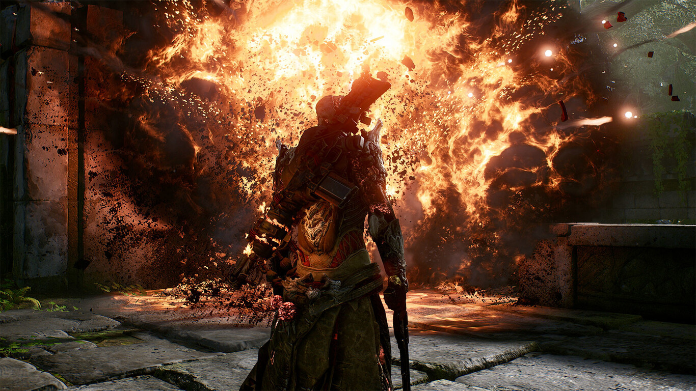

ABOUT OUTRIDERS :
A JOURNEY OF DEATH
Humanity’s hope for survival rests on your journey deep into the cradle of
Enoch’s civilisation.
GUNS & GEAR
Customise and upgrade your Outrider(s) with all new and powerful Apocalypse items and
mods. Apocalypse items have an additional 3rd mod slot to customise your loadout to match your
playstyle. As well as a full and entirely free Transmog system across all items.
POWER
Adapt your abilities and skills in addition to the vast Class Skill Trees with new Pax Trees
for hybrid branch boosts. Challenge yourself against all Apocalypse Tiers with your burgeoning power and
boost your Ascension Points of Brutality, Endurance, Prowess and Anomaly.
UNIQUE CLASSES
Continue with your existing classes or create and customise your new Outriders. Choosing from 4 unique
powerful classes each with its own deadly array of brutal abilities with Skill Trees and Pax Trees to
further define your personal playstyle.